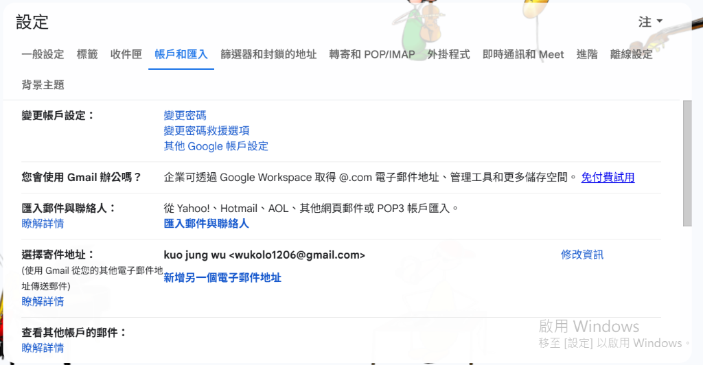
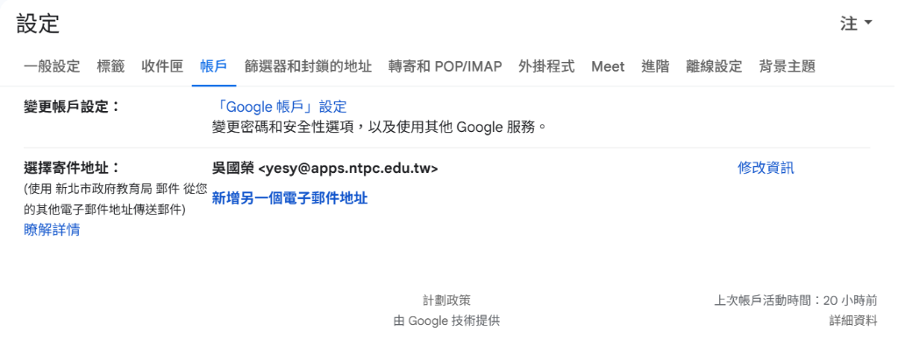
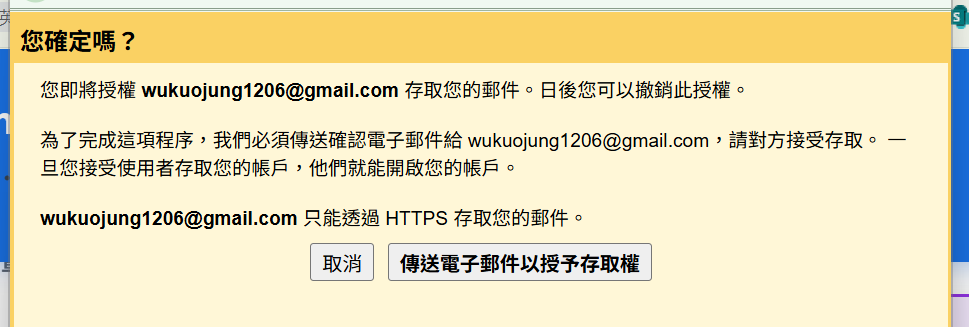
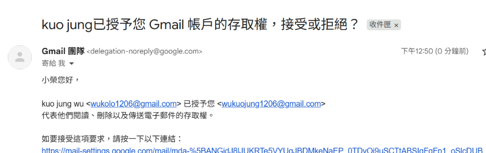
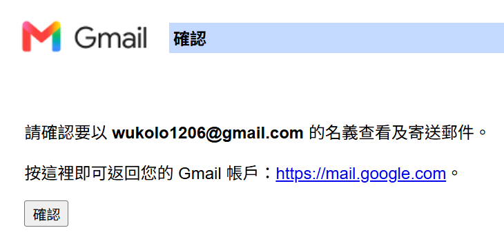
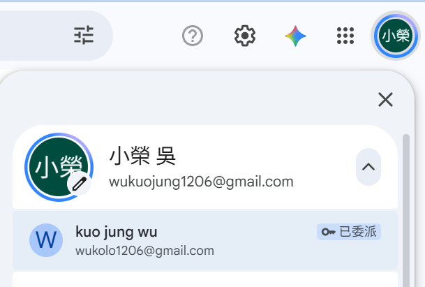
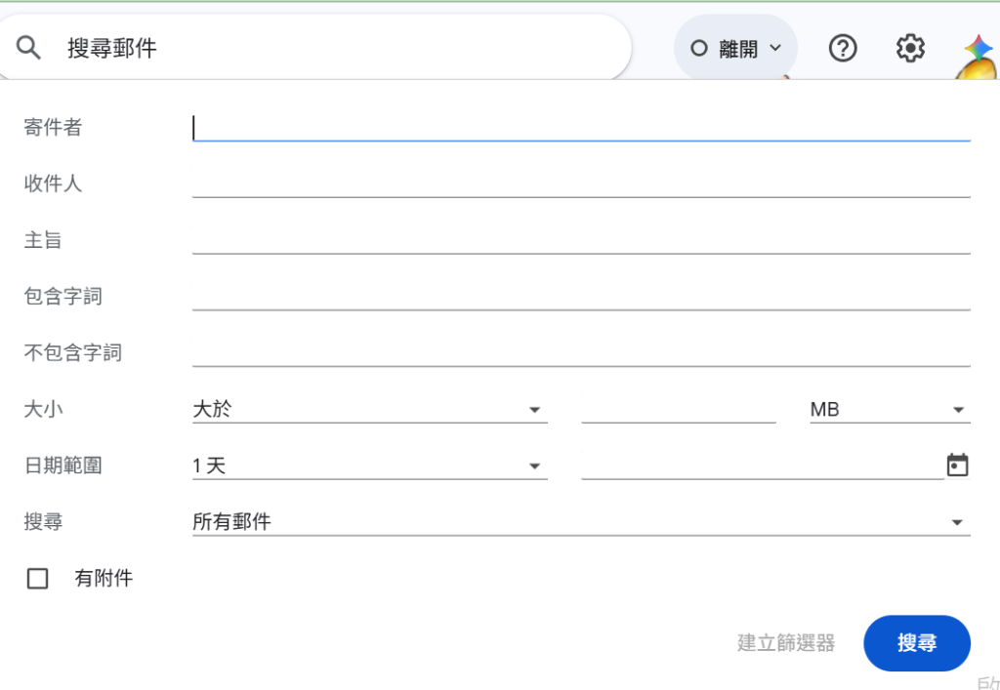

研習簡介與教學策略
Gmail 實務應用總覽
歡迎來到 Gmail 工具篇講義！教師每天花在信箱上的時間遠超過想像。本單元不教你怎麼寫信，而是教你怎麼讓信自己分類、怎麼不必重打同一段話、怎麼在三秒內找回三年前的附件，以及行政職務交接時最正確的授權方式。
💡 本章四大實務演練目標：
- 演練一：授予帳戶存取權（帳戶代理），讓同仁代收代發而不必給密碼。
- 演練二：用篩選器與標籤，讓特定來信自動分類、自動跳過收件匣。
- 演練三：用範本與排程寄送，把重複的家長回信變成兩次點擊。
- 演練四：用搜尋運算子，精準撈出多年前的信件與附件。
🔤 本篇功能術語中英對照
Google 介面可切換語言，官方文件與國際研習場合也多用英文。
操作時請順便記住右欄的英文名稱。
★ ＝核心功能
⚙ ＝名稱須完全一致（系統逐字比對）
⚠️ ＝容易混淆
| 繁體中文介面 |
English |
備註 |
| ★ 授予您帳戶的存取權 | Grant access to your account | 代理不必給密碼，責任歸屬清楚 |
| 帳戶與匯入 | Accounts and Import | 設定分頁名稱 |
| 篩選器 | Filter | 規則引擎 |
| 標籤 | Label | Gmail 沒有資料夾，只有標籤 |
| 略過收件匣 | Skip the Inbox | 篩選器動作之一 |
| 範本 | Templates | 舊稱罐頭回應；須先在「進階」啟用 |
| 排程傳送 | Schedule send | 傳送鈕旁的下拉箭頭 |
| 搜尋運算子 | Search operators | has:attachment、from:、before: |
🧭 本篇會用到的練習方式：
- 👥 兩人一組 需要另一個人才練得到，請和旁邊的夥伴配對。
- 🔨 自己建一次 沒有範本，從空白自己做一次（這類功能自己排過才會懂）。
每則演練都先讀黃色的實務教學情境了解為什麼要做，再看彩色框的練習方式取得你的練習環境，
最後照步驟清單逐項打勾。
核心功能演練一
授予您帳戶的存取權 (Grant access to your account) 代收代發
🔍 實務介面對照：個人版 (@gmail.com) vs 學校教育版 (@apps.ntpc.edu.tw)
在研習上機時，許多老師會發現自己的 Gmail 設定畫面長得不一樣，這是因為個人帳號與教育局/學校 Workspace 網域權限不同：
📷 1. 個人 Gmail 帳號（@gmail.com）：

分頁名稱為「帳戶和匯入」，預設完整開放「授予您帳戶的存取權」
📷 2. 學校教育版帳號（@apps.ntpc.edu.tw）：

分頁名稱為「帳戶」，若教育局管理後台關閉委派，此功能會被系統隱藏
💡 研習實作與備考指南：
- 現場上機演練：請老師們使用個人 @gmail.com 帳號兩人一組互相新增代理人，可 100% 順暢演練「邀請與接受」流程。
- 認證考試標準路徑：在 Level 2 考試中，標準解題路徑為：
設定 (右上齒輪) ➔ 查看所有設定 ➔ 帳戶與匯入 ➔ 授予您帳戶的存取權 ➔ 新增其他帳戶！
- 注意防呆：請勿點選「選擇寄件地址」中的「新增另一個電子郵件地址」（那是別名寄件，非帳戶代理）。
📷 3. 授予存取權確認對話框（點擊「傳送電子郵件以授予存取權」發出邀請）：

發送後，對方信箱會收到一封確認信，點擊「接受」後即完成代理人授權！
📷 4. 代理人收到授權確認信：

信件主旨：已授予您 Gmail 帳戶的存取權，接受或拒絕？
📷 5. 點擊連結確認完成接受：

點選「確認」後，即完成所有代理授權綁定手續！
📷 6. 成果驗證：點右上角頭像切換【已委派】信箱：

✨ 代理授權完成後的強大效果：
- 免密碼一鍵切換：點選帶有
🔑 已委派 標籤的帳戶，直接開啟獨立新分頁進入該信箱，免輸密碼！
- 代發信責任歸屬清楚：寄信時收件者會看到
由「代理人」代表「主管」傳送，清楚記錄經手人。
- 最高資安防護：代理人無法修改主管密碼、無法進入主管的私密雲端硬碟，主管可隨時一秒撤銷授權！
📷 7. 最終收件者視覺效果：清楚顯示【代表主管】與【實際代理人】！
🎯
標題解析：
kuo jung wu <wukolo1206@gmail.com> (寄件者 wukuojung1206@gmail.com)
- 前半段：代表的主管/公用帳號（收件者知道這是教務處或組長的正式信函）。
- 後半段
(寄件者...)：由系統自動標記真實經手代發的助理帳號，責任歸屬 100% 清楚無可造假！
帳戶代理讓對方能用自己的密碼登入，切換身分代讀與代發你的信，而且收件者會看到「由○○代表○○寄出」，責任歸屬清楚。這是唯一正確的信箱交接方式——把密碼給別人不只違反資安規範，出事時也完全無法追查是誰做的。
【實務教學情境】：
您接任教務組長，科室的公用信箱每天有大量公文往返。您需要授權助理代為收發，但絕不能把帳號密碼交出去；同時您希望對方寄出的信件，收件者看得出來是誰代寄的。
👥 本單元練習方式：兩人一組，互相操作才練得到
角色分工：- A 老師（授權者）：在「設定 ➔ 帳戶與匯入 ➔ 授予您帳戶的存取權」新增 B 的 Email。
- B 老師（代理人）：至信箱點選確認連結完成接受（生效最多需 24 小時，不必當場等）。
- 兩人交換角色再做一次，並注意代理人無法更改 A 的密碼或聊天記錄。
🎯 你要做的事：兩人一組互相授權：各自把對方加為自己帳戶的代理人，並到信箱點選確認連結完成接受。（切換身分代寄可能要等最多 24 小時才生效，現場改看講師示範。）
💬 ⚠️ 現場做得完的只有「邀請」與「接受」這兩步：Google 官方說明，代理人接受邀請後最多可能要等 24 小時才能真正切換使用該帳戶，因此切換身分代寄請看講師以預先授權好的帳號示範。另外學校網域的管理員常限制只能授權給同網域帳號，找不到選項多半是這個原因。
▶️ 實作步驟導引清單：
核心功能演練二
建立篩選器 (Filters) 與標籤 (Labels) 讓信件自動歸位
Gmail 沒有「資料夾」，只有可以一封信同時貼多個的標籤。篩選器則是規則引擎：符合條件的來信可自動貼標籤、自動標為已讀、自動略過收件匣、甚至自動轉寄。
【實務教學情境】：
您同時是導師與研習承辦人，收件匣裡混雜著家長信件、系統通知、各校研習公文與學生作業繳交通知。每天早上要花十分鐘從一堆信裡挑出真正需要回覆的那幾封。
⚙️ 篩選器設定核心：在【搜尋面板】輸入條件 ➔ 點選「建立篩選器」
建立篩選器時，請點擊搜尋列右側的選項圖示展開條件面板。填好過濾規則後，請特別注意：不要點「搜尋」，而是點選藍色按鈕旁的「建立篩選器」：
📷 點擊搜尋列右側展開的【建立篩選器面板】：

⚠️ 填寫完條件後，點擊右下角的「建立篩選器」按鈕！
🚀 點擊「建立篩選器」後的下一步常用動作：
- ✅ 套用標籤 (Apply the label)：例如將特定寄件者自動貼上「行政公文」或「家長聯絡」標籤。
- ✅ 略過收件匣 (Skip the Inbox)：系統通知或常態報表自動封存歸檔，不再干擾收件匣。
- ✅ 標示為已讀 (Mark as read) / 標示為星號 (Star it)：重要主管來信自動標星。
- ✅ 同時套用至相符的會話群組：將信箱裡過去已收到的舊信一次全部歸檔！
🔨 本單元練習方式：從零自己建一次（不需要範本檔）
🎯 你要做的事：在自己的 Gmail 建立一個「家長來信」標籤與對應篩選器，並勾選「略過收件匣」與「一律標示為重要」，再用「套用至相符的對話」把過去的信一次歸位。
💬 最實用的一招是勾選「同時套用篩選器至 N 個相符的對話」——規則建立的當下就把過去幾年的舊信一次分類完，不必手動整理。
▶️ 實作步驟導引清單：
核心功能演練三
範本 (Templates) 與排程傳送 (Schedule send) 處理重複性回信
範本（舊稱罐頭回應）需先到「設定 ➔ 進階」啟用才會出現，啟用後可把常用回覆存起來一鍵插入；排程傳送則讓你在方便的時候寫信、在恰當的時間寄出。
【實務教學情境】：
每學期初，您都要回覆數十封內容幾乎相同的家長詢問信（課後輔導時間、聯絡方式、請假流程）。此外，您常在深夜十一點整理完班務，但不希望信件在那個時間寄到家長手機上。
⚖️ 關鍵觀念深度解析：【✍️ 簽名檔 (Signature)】vs【📋 範本 (Templates)】
在學校行政與教學日常中，老師們常常容易混淆這兩項功能。其實只要記住一句話：「每封信結尾自動帶入的叫『簽名檔』；整篇完整信件內容重複叫出的叫『範本』！」
| 比較面向 |
✍️ 簽名檔 (Signature) |
📋 範本 (Templates / 舊稱罐頭回應) |
| 📍 設定路徑 |
設定 ➔ 一般設定 ➔ 簽名 |
設定 ➔ 進階 ➔ 啟用範本
（撰寫信件時：右下角三點 ➔ 範本） |
| ⚡ 觸發方式 |
自動產生：只要按「撰寫」或「回覆」，信件最底端自動帶出。 |
手動插入 / 規則觸發：寫信時手動點選套用，或由篩選器自動回信。 |
| 📝 內容性質 |
個人資訊與名片：職稱、學校電話、分機、公務信箱、問候結語、學校 Logo。 |
整篇完整信件內文：包含主旨、開頭稱謂、條列注意事項、常見問題解答。 |
| 🏫 學校應用實例 |
教務處組長名片、導師聯絡資訊、免責聲明。 |
戶外教育通知信、請假缺補課流程回覆、家長會常態詢問答覆。 |
📋 演練三推薦範本文章（點擊直接複製，即可建立您的第一個 Gmail 範本）：
【信件主旨】：【重要通知】○○國小 ○年○班 校外教學行前準備與注意事項通知
各位家長好：
本學期班級校外教學參訪活動即將於下週舉行，為了讓孩子們能有充實且安全的學習體驗，請家長協助提醒與準備以下事項：
📍 【活動資訊】
1. 集合時間：○月○日（星期○）上午 07:50 前於教室集合完畢
2. 參訪地點：新北市立十三行博物館
3. 預計返校：下午 15:30（依當天交通路況為準）
🎒 【必備隨身物品】
• 穿著學校體育服、運動鞋
• 輕便雙肩背包（裝水壺、輕便雨衣、個人常備藥品）
• 健保卡、悠遊卡（請先儲值）
若當天有任何突發狀況需請假，請於 07:30 前透過班級官方管道或撥打學校分機告知導師。
感謝家長的配合與支持！
導師 敬上
💡 操作提示：複製上方整段文章，在 Gmail 點「撰寫」貼上主旨與內文，再點右下角 三點 ➔ 範本 ➔ 將草稿儲存為範本 ➔ 另存為新範本 即可！
📷 8. 實務操作：撰寫信件時，由右下角【三點選單 ➔ 範本】儲存或套用：
🎯
標準兩步驟：
- 儲存為新範本：草稿打好後 ➔ 點右下角
三點 ➔ 範本 ➔ 將草稿儲存為範本 ➔ 另存為新範本。
- 未來一鍵插入：開新信時 ➔ 點右下角
三點 ➔ 範本 ➔ 點選「校外教學通知」 即可瞬間填滿！
🔨 本單元練習方式：從零自己建一次（不需要範本檔）
🎯 你要做的事：啟用「範本」功能，把一段常用的家長回覆存成範本，然後寫一封新信套用該範本，並用「排程傳送」指定明天早上 8:00 寄出。
💬 排程中的信件會待在「已排程」資料夾，寄出前都還能取消或修改——這也是避免深夜擾民、又不會忘記寄的最佳作法。
▶️ 實作步驟導引清單：
核心功能演練四
善用搜尋運算子 (Search operators) 撈出多年前的信件與附件
🔍 觀念解密：【圖形搜尋面板欄位】vs【鍵盤運算子指令】一對一完全對照
許多老師習慣點開搜尋面板一格一格填寫，但其實運算子指令就是圖形面板各欄位的鍵盤快速語法！在 Google 認證 Level 2 考試與大量行政處理中，直接在搜尋框鍵入運算子可大幅提升效率：
⚡ 運算子的超強進階威力：
- 鍵盤秒搜：直接輸入
from:主任 has:attachment filename:xlsx，省去滑鼠開選單與點選時間。
- 邏輯組合：支援
OR、- (減號排除)、larger:5M 等複合精準過濾。
| 圖形面板欄位 (滑鼠填表) |
對應的搜尋運算子 (鍵盤指令) |
實務指令範例說明 |
| 寄件者 |
from: |
from:教務處 或 from:apps.ntpc.edu.tw |
| 收件人 |
to: |
to:家長會 |
| 主旨 |
subject: |
subject:校外教學 |
| 包含字詞 |
直接輸入關鍵字 |
校務會議 提案 |
| 不包含字詞 |
- (減號排除) |
-廣告 -促銷 |
| 勾選「有附件」 |
has:attachment |
has:attachment filename:xlsx |
| 大小大於 |
larger: 或 size: |
larger:5M (快速撈出吃空間的大信件) |
| 日期範圍 |
after: / before: |
after:2025/09/01 before:2026/01/20 |
把關鍵字丟進搜尋列常常撈出上百封。搜尋運算子能精確限定寄件者、時間範圍、是否有附件與檔案類型，是資深教師找回歷史資料最快的方式，也是 Level 2 的常考內容。
【實務教學情境】：
教育局來電索取前年校慶活動的核銷附件，您只記得是某位主任寄來的 Excel 檔，大概在十一月左右。信箱裡有兩萬封信，直接搜「校慶」會跳出幾百筆。
🔨 本單元練習方式：從零自己建一次（不需要範本檔）
🎯 你要做的事：在自己的信箱依序試用下列運算子並記下結果筆數：has:attachment、from:某人、after:2025/11/01 before:2025/12/01、filename:xlsx、larger:5M，最後把它們組合成一條查詢。
💬 運算子可以自由疊加，例如：
from:主任 has:attachment filename:xlsx after:2025/11/01 before:2025/12/01
——這一條就能把上面情境的信精準撈出來。找到後可點選「建立篩選器」把同類信件永久自動歸檔。
▶️ 實作步驟導引清單：